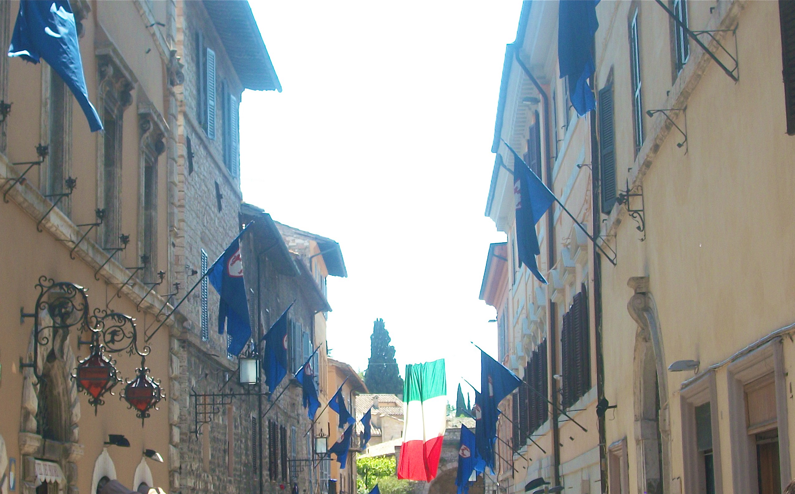

Welcome to Italia

There are countless cities in Italy filled with beauty, elegance, fun, and great food. Of the many, the greatest are undoubtedly Rome, Florence, Pisa, Venice, and the Five Cities.
These cities hold the best attractions as well, which can be discovered through each city's page!